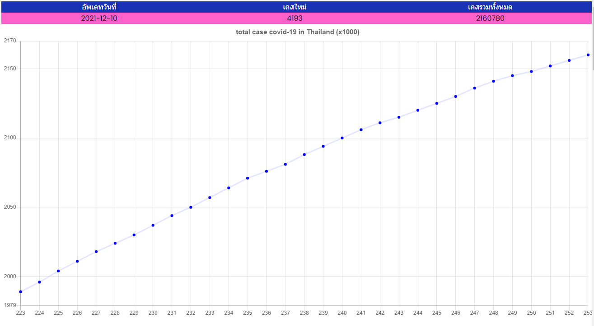
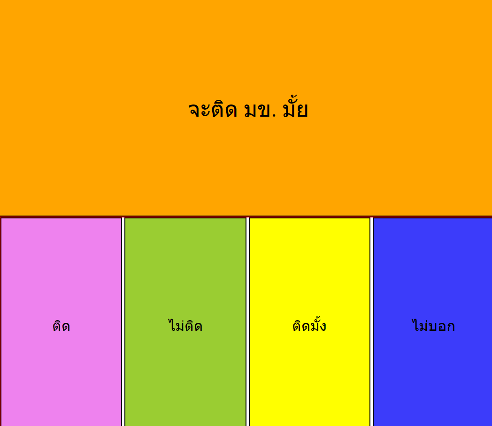
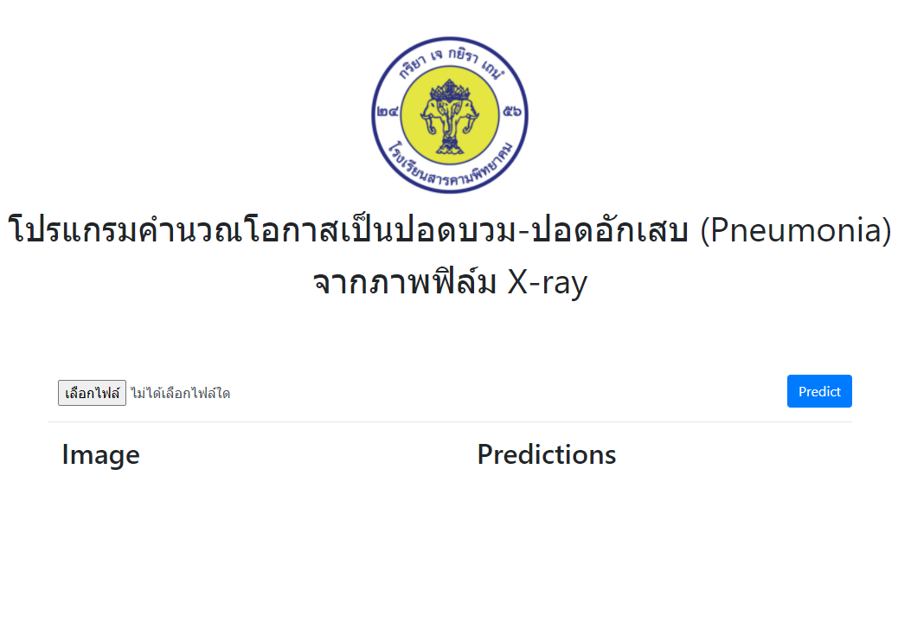

เว็บสำหรับนับเวลาหลังจากที่พลเอกประยุทธ จันทร์โอชา ทำการรัฐประหาร

เว็บแอพพลิเคชันสำหรับเช็คยอดผู้ป่วยโควิด-19 รายวันของประเทศไทยและดูข้อมูลเพิ่มเติมเกี่ยวกับโควิด-19

เว็บตอบคำถาม

เว็บสำหรับแยกปอดบวม-อักเสบออกจากปอดธรรมดา
ตัวโมเดลปัญญาประดิษฐ์ที่ใช้ในการแยกปอดบวม-อักเสบนั้นผมไม่ได้เป็นคนสร้าง ผมเพียงแค่นำไฟล์โมเดล h5 มาแปลงเป็น json แล้วนำไปใช้กับ Tensorflow-js ให้เท่านั้น
เว็บที่ใช้ในการเก็บข้อมูลสินค้า
เว็บไซต์นี้ถูกใช้ในการเช็คสต็อกสินค้าของร้านบงกชบริขาร ซึ่งเป็นร้านของแม่ผมเอง สามารถลองอัพเดทข้อมูลดูได้ครับ เป็นเว็บที่ใช้ฐานข้อมูลจาก google sheet ครับ
เว็บที่ใช้ในการแข่งขันโครงงาน
โครงงานระบบเช็คชื่อด้วยใบหน้าใช้เว็บไซต์นี้ในการตรวจสอบเวลาเรียนของนักเรียน